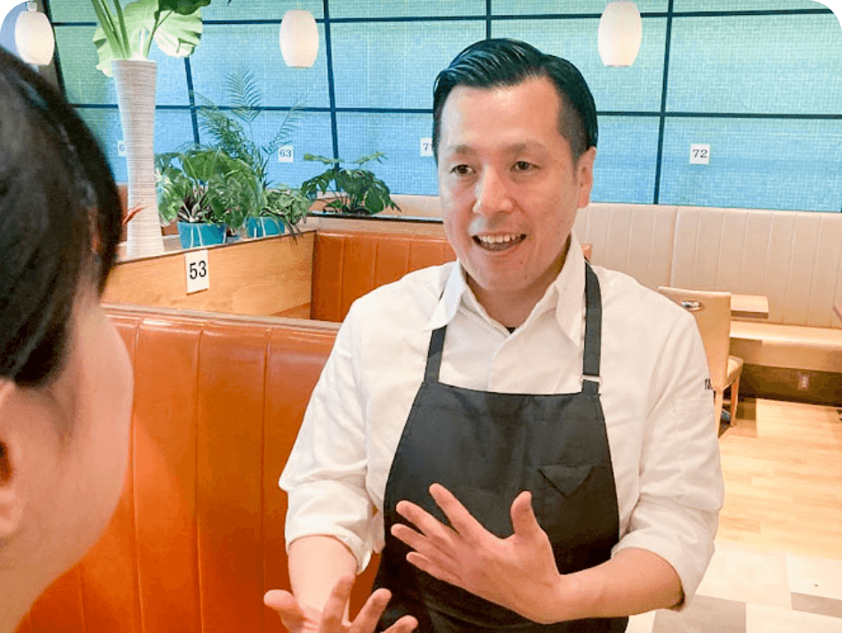

新卒入社・中途入社ともに、さまざまなキャリア実現の可能性があります。
あなたの夢を実現するための、各制度や取り組みについて紹介します。

01
Job Type
ニラックスの仕事
入社後は店舗スタッフからスタートし、店舗・営業部・本部の各ポジションで活躍するチャンスがあります。多様な職種の中から、代表的な一例を紹介します。
-
店舗スタッフ
20～100人の従業員を育て、年間10～30万人のお客様にお食事いただき、お客様、スタッフ、地域の笑顔をつなぐことが使命です。
職種の一例
アシスタントマネジャー
美味しい料理と気持ちの良いサービスを体現し、マネジャーを目指します。
マネジャー
料理だけでなく「心も満たす価値」を提供するために、店舗をまとめていく仕事です。
-

営業スタッフ
店舗をバックアップし、マネジャーと共に、課題解決や売上・利益拡大のための提案・行動をします。
職種の一例
エキスパートマネジャー
4店舗前後の店舗を担当し、接客や調理オペレーションや組織の改善をしていきます。
スーパーバイザー
事業全体を担当し、会社の目標値を達成する為、幅広く業務を担当します。
-

本部スタッフ
一人でも多くのお客様をお迎えするための店舗運営を多角的にサポートする業務を担当します。
職種の一例
総務人事
採用や教育研修、労務管理などの人に関わること全般と総務業務を担っております。
プロモーション
販促・広告デザインからブランド創造まで、お客様の来店につながる施策を実行します。
02
Career&Taining
キャリアと研修
入社後のキャリア育成
入社後は店舗スタッフからスタートし、オリエンテーションやフォローアップ研修で細やかにサポートしていきます。
Ｊ1〜3の3つの階層があり、それぞれのレベルに合わせたスキルアップ研修を受講します。
各階層の認定試験を経ることで、約2年程度で店舗マネジャーの資格を得ることができます。
長期的なキャリア育成
従業員の「やる気」や「本気」を長期的に支えていく、バラエティに富んだ研修制度を用意しています。
各研修や認定試験を経験しながら、お客様の感動や満足を実現するためのスキルを着実に身に付けていくことができます。
マネジャー以外の職場など新しいキャリアに挑戦する機会や、将来の経営層を育成する制度・プログラムも構築しています。

詳細のキャリアロードマップや研修プログラムはコチラ

03
Event
イベント
ニラックス甲子園
「お客様の声を聞き、問題点を
見つけ、必ず改善させる！」
ニラックスの永遠の基本方針である「お客様の声を聞き、問題点を見つけ、必ず改善させる！」を
店舗スタッフ主体に具現化できた取り組みを発信する、年に1回の大事な時間。
それが、「ニラックス甲子園」。
各店舗が抱える課題や問題に対してどのような取り組みが行われ、どう改善したのか、成果までの一連の過程から、ぜひ展開したいと熱い想いをもってエントリーをします。
店舗で働くスタッフが生み出す
『感動』こそ、成長の原動力！
そして選抜された店舗は、東京の会場にて、全店舗のマネジャーの前で、店舗スタッフがプレゼンをし、その年の最優秀店舗が決定するという熱気と感動が詰まった、店舗のスタッフが主役となる晴れ舞台です。
ニラックス甲子園の感動が店舗に伝わり、そして新たに全国の各店舗で感動ストーリーが生まれてほしい、そんな思いが込められたニラックスらしいカルチャーです。
出場したスタッフの思いが伝わる「ニラックス甲子園」ダイジェストムービーは、NILAXチャンネルよりご覧ください。

04
Benefit
福利厚生
企業としての安定性
-
すかいらーく
ホールディングスのグループ会社
-
創業37年目
の安定性
-
3000箇所
以上の働く場所と定年
継続が可能 -
確定拠出年金制度
すかいらーくグループは2001年に
この制度を
日本で最初に始めました。 -
賞与年3回
安心の休暇制度
-
年間117日
の休暇制度
-
22.9時間
月間平均残業時間
（2023年度実績） -
年2回、5連休以上
取得制度
取得率100%（2023年度実績）
働きやすさをさらに追及
-
従業員食事補助制度
出勤時、1食356円（税込み）で1日2回まで食事できる制度です。
-
社員割引制度
グループ店舗での飲食、または人気商品を割引で利用・購入可能です。
-
借上げ社宅制度
地域区分、扶養の有無、経過年数により社会負担額が異なります。上限6万円。
※ナショナル社員のみ -
配属や転勤に伴う引越し
費用０円新居の初期費用や部屋探しの際の交通費、引越し費用まですべて会社が負担します。※規定あり
-
ご家族優待割引制度
1枚で6人まで、グループ店舗で使える10～25％割引券を利用できます。
-
子育て支援手当
扶養する子ども1人につき、月1万円の支給があります。
-
家庭との両立も安心の
サポートあり産休・育休・介護休の他、最大でお子様が小学校卒業まで時短勤務可能です。
-
選べる・変えられる
働き方あり引越しを伴う転勤がない、エリア社員という働き方も。ライフステージにあわせて雇用区分を変更することもできます。